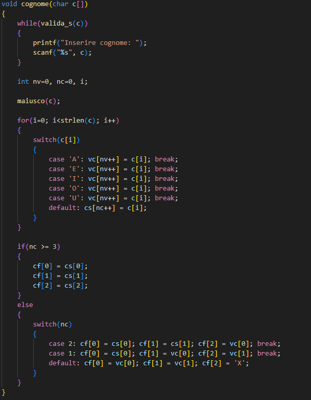
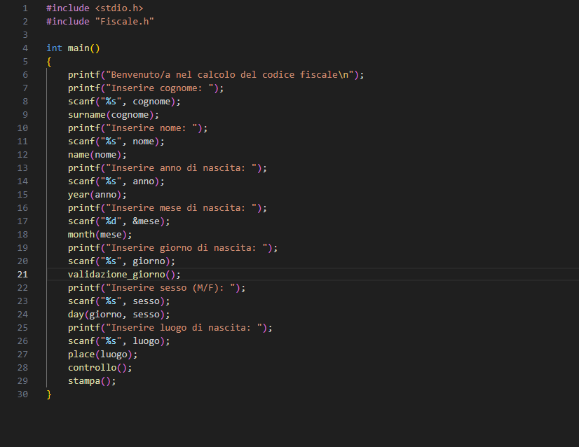

Generazione del Codice Fiscale in C
Nel mio progetto ho sviluppato un programma in linguaggio C per generare il codice fiscale italiano in modo automatico. Il programma è strutturato in due file principali:
- Fiscale.h: contiene le dichiarazioni di variabili e funzioni, oltre all'implementazione della logica di elaborazione del codice fiscale.
- Marusich_Codice_Fiscale.c: è il file principale che gestisce l'input dell'utente e richiama le funzioni definite in Fiscale.h.
Come funziona il programma?
Il programma guida l'utente nell'inserimento dei dati personali, tra cui:
- Cognome
- Nome
- Anno di nascita
- Mese di nascita
- Giorno di nascita
- Sesso
- Luogo di nascita
Successivamente, utilizza funzioni specifiche per elaborare i dati e generare il codice fiscale:
- surname(cognome) e name(nome): estraggono consonanti e vocali per i primi caratteri del codice.
- year(anno), month(mese) e day(giorno, sesso): codificano la data di nascita.
- place(luogo): legge il codice del comune da un file di testo.
- controllo(): calcola il carattere di controllo.
- stampa(): visualizza il codice fiscale generato.
Galleria

